Fretzpod User Guide
For Fretzpod __VERSION__ on __SERVER__
Chapter 1
Fretzpod Basics
Fretzpod is a music player for your phone, modeled on the iPod classic. It plays the music on __SERVER__, and you control it with a click wheel on the screen.
Fretzpod at a glance
Get to know the controls on Fretzpod:
Signing in
Fretzpod uses your __SERVER__ account. You can sign in with Quick Connect, using the __SERVER__ app you already have, or with your password.
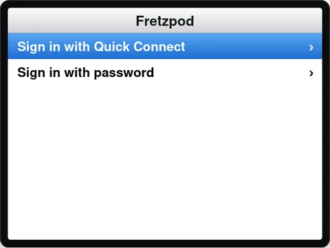
Sign in with Quick Connect:
- Open the Fretzpod address you were given.
- Choose Sign in with Quick Connect. A six-digit code appears.
- In your __SERVER__ app on another device, open your profile, then Quick Connect, and enter the code.
Fretzpod signs in on its own a few seconds later. If the code expires, press Menu and choose Sign in with Quick Connect again for a new one.
Sign in with your password:
- Choose Sign in with password, enter your username and password, and then tap Sign In.
To sign out, choose Settings -> Sign Out.
Adding Fretzpod to your Home Screen
Added to your Home Screen, Fretzpod opens like any other app: full screen, with its own icon, and without the browser's address bar.
Note: Phones only install apps from secure addresses. Use the Fretzpod address that starts with https://.
On an Android phone, using Chrome:
- Open Fretzpod in Chrome.
- Tap the menu button (the three dots) in the top-right corner.
- Tap Add to Home screen, and then tap Install.
On a Samsung phone, using Samsung Internet:
- Open Fretzpod in Samsung Internet.
- Tap the menu button (the three lines) at the bottom of the screen.
- Tap Add page to, and then tap Home screen.
On an iPhone, using Safari:
- Open Fretzpod in Safari.
- Tap the Share button.
- Tap Add to Home Screen, and then tap Add.
Fretzpod keeps itself up to date. When a new version comes out, you get it the next time you open the app.
Using Fretzpod controls
Use the Click Wheel and Center button to move through onscreen menus, play songs, change settings, and get information.
Move your thumb lightly around the Click Wheel to select a menu item. To choose the item, press the Center button. To go back to the previous menu, press Menu on the Click Wheel.
Here's what else you can do with Fretzpod controls.
| To | Do this |
|---|---|
| Choose a menu item | Use the Click Wheel to scroll to the item and press the Center button to choose it. |
| Go back to the previous menu | Press Menu. |
| Scroll quickly through a long list | Move your thumb quickly around the Click Wheel. In Artists and Albums, a large letter appears and Fretzpod jumps one letter at a time. |
| See more options for a song, album, artist, or playlist | Select it and press and hold the Center button until a menu appears. See Using the options menu. |
| Play or pause | Press Play/Pause. |
| Skip to the next song | Press Next/Fast-forward. |
| Start a song over | Press Previous/Rewind. Press it again within the first few seconds to go to the previous song. |
| Fast-forward or rewind | Press and hold Next/Fast-forward or Previous/Rewind. |
| Change the volume | From the Now Playing screen, use the Click Wheel.On an iPhone, use the volume buttons on the side of the phone. |
| Skip to any point in a song | From the Now Playing screen, press the Center button to show the scrubber bar, and then use the Click Wheel. |
| Change a setting the other way | In Settings, press Previous/Rewind to step back through a setting's choices, or Next/Fast-forward to step forward. |
| Turn on Sleep Mode | Press and hold Play/Pause for about a second. Sleep Mode must be turned on in Settings. See Using Sleep Mode. |
Using Fretzpod on a computer
On a computer, the keyboard works as the Click Wheel.
| To | Do this |
|---|---|
| Turn the Click Wheel | Press the Up Arrow or Down Arrow key, or use your mouse or trackpad to scroll. |
| Press the Center button | Press Return (Enter). |
| Press Menu | Press Esc or Delete (Backspace). |
| Press Play/Pause | Press the Space bar. |
| Press Previous or Next | Press the Left Arrow or Right Arrow key. |
| Press and hold a button | Hold down its key. |
Click sound and vibration
Fretzpod clicks as you turn the Click Wheel, and on most Android phones it vibrates lightly too. To turn either off, see Fretzpod settings.
Using Fretzpod menus
When you open Fretzpod, you see the main menu. Choose menu items to perform functions or go to other menus. Icons along the top of the screen show Fretzpod status.
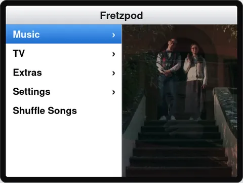
| Display item | Function |
|---|---|
| Menu title | Displays the title of the current menu. |
| Play icon | The Play icon appears when a song is playing. The Pause icon appears when it's paused. |
| Battery icon | Shows the approximate charge left on your phone. It appears in Chrome on the secure (https) address. |
| Menu items | Use the Click Wheel to scroll through menu items. Press the Center button to choose an item. An arrow next to a menu item indicates that it leads to another menu or screen. |
The main menu contains these items.
| Menu item | What it's for |
|---|---|
| Music | Browse, search, and play your music. See Chapter 3. |
| TV | Watch free live TV channels. Appears only if __SERVER__ offers TV. See Watching TV. |
| Extras | Games, high scores, alarms, and the sleep timer. See Chapter 4. |
| Settings | Change how Fretzpod plays, looks, and sounds. See Chapter 2. |
| Sleep | Turns on Sleep Mode. Appears only when Sleep Mode is turned on in Settings. |
| Shuffle Songs | Plays songs from your whole library in random order. |
| Now Playing | Shows the song that's playing. Appears only while music is playing or paused. |
Chapter 2
Settings
Settings change how Fretzpod plays, looks, and sounds. Your settings are kept on your phone, so each device you use can have its own.
Changing a setting
Choose Settings from the main menu. Each setting shows its current choice on the right.
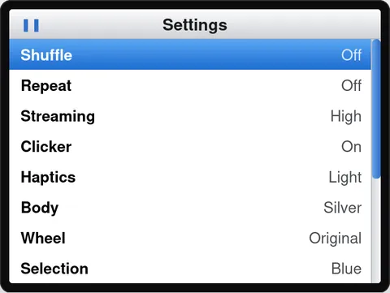
- To change a setting, select it and press the Center button. Each press moves to the next choice.
- To move back through the choices, press Previous/Rewind. To move forward, press Next/Fast-forward.
- A setting with an arrow opens its own menu.
Fretzpod settings
| Setting | What it does |
|---|---|
| ShuffleOff, Songs | When set to Songs, the songs in an album, playlist, or list play in random order. |
| RepeatOff, One, All | One plays the current song again and again. All starts the list over when it ends. |
| StreamingHigh, Data saver | High plays at full quality. Data saver uses less than half the data, for cellular connections. Away from home, Fretzpod starts on Data saver. |
| ClickerOn, Off | The click sound as you turn the Click Wheel. |
| HapticsLight, Strong, Off | The vibration as you turn the Click Wheel. If you can't feel Light, try Strong. Not available in Firefox. On iPhone (iOS 18 or later) it's being tested and may not work yet; it isn't available on older iPhones. |
| Body | The color of Fretzpod: Silver, Black, Blue, Red, or __PURPLE__. More bodies can be won in Extras. |
| Wheel | The color of the Click Wheel. Original is the wheel that comes with the body you chose. |
| Selection | The color of the highlight on the item you select. |
| Screen | Light or dark menus. See Using the dark screen. |
| Art ScreenOff, 30 Seconds, 2 Minutes | Shows the album art when Fretzpod is left alone while music plays. See Using the Art Screen. |
| Sleep Mode | A dim clock that keeps the screen on. See Using Sleep Mode. |
| In the Car | Car Mode, and the apps to use for Android Auto and CarPlay. See Using Car Mode. |
| About | Your Fretzpod version and account. See The About screen and the log. |
| Sign Out | Signs you out of Fretzpod on this device. You're asked to confirm. |
Changing how Fretzpod looks
You can choose the color of the body, the Click Wheel, and the selection highlight separately.
- Choose Settings -> Body, Settings -> Wheel, or Settings -> Selection, and press the Center button until you see the color you want.
Note: The gold and clear bodies you can win in Extras keep their own Click Wheel. The Wheel setting shows Prize body while one is on.
Using the dark screen
The dark screen shows Fretzpod's menus as light text on black, which is easier on your eyes in a dark room. Car Mode follows it too.
Choose light or dark menus:
- Choose Settings -> Screen.
- Select Mode and press the Center button to choose Light, Dark, Scheduled, or Match Phone.
Match Phone follows your phone's own dark mode. Scheduled turns the screen dark between two times you set.
Set the hours for Scheduled:
- Choose Settings -> Screen and set Mode to Scheduled. Starts and Ends appear.
- Choose Starts, set the time the screen turns dark, and press the Center button.
- Choose Ends, set the time it turns light again, and press the Center button.
Using the Art Screen
When the Art Screen is on, and music is playing, Fretzpod shows the album art on a black screen after you leave it alone for a while, and dims the Click Wheel.
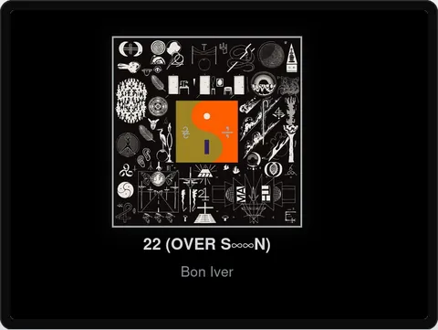
- To turn it on, choose Settings -> Art Screen, and then choose 30 Seconds or 2 Minutes.
- To return to the menus, touch the screen or press any button. That first touch only brings the menus back. Play/Pause is the exception: it also pauses or plays.
The Art Screen doesn't cover games, TV, Car Mode, or lyrics.
Using Sleep Mode
In Sleep Mode, Fretzpod dims your whole phone screen to black and shows only the time. Your music keeps playing. While Sleep Mode is showing, your phone's screen stays on, so Fretzpod can sit on a nightstand or desk like a clock.
Sleep Mode is off until you turn it on.
Turn on Sleep Mode:
- Choose Settings -> Sleep Mode.
- Select Mode and press the Center button to choose By Hand or Scheduled.
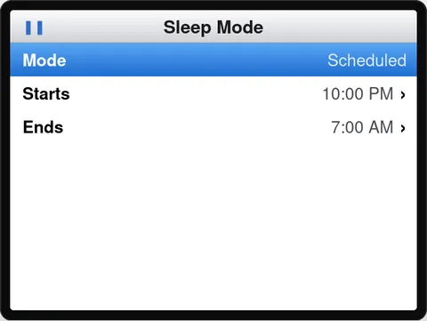
| Mode | What it does |
|---|---|
| Off | Sleep Mode isn't used. |
| By Hand | Sleep Mode starts when you press and hold Play/Pause for about a second, or choose Sleep from the main menu. |
| Scheduled | Everything By Hand does, and Sleep Mode also starts on its own between the Starts and Ends times you set, after a minute without touching Fretzpod. |
- To leave Sleep Mode, touch the screen.
- The time moves to a new spot every minute, so it doesn't leave a mark on the screen overnight.
Note: Keeping the screen on only works on the secure (https) Fretzpod address. While lyrics are showing, Fretzpod also keeps the screen on, so it doesn't go dark in the middle of a song.
Setting a time
Times for the dark screen, Sleep Mode, and alarms are set with the Click Wheel.
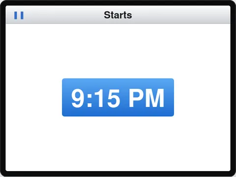
- Choose the time you want to change, such as Starts.
- Use the Click Wheel to move the time forward or back.
- Press the Center button or Menu to keep the time.
You can also select the time without opening it and press Previous/Rewind or Next/Fast-forward to move it by one step.
Chapter 3
Listening to Music
Fretzpod plays the music on __SERVER__. On Android phones, music keeps playing when you switch to another app or lock your phone, and you can control it from your lock screen, headphones, and car.
Browsing your music
Choose Music from the main menu.
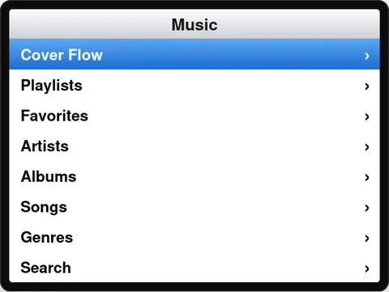
| Menu item | What it shows |
|---|---|
| Cover Flow | Your albums as covers. See Using Cover Flow. |
| Playlists | Your playlists, and playlists shared with you. |
| Favorites | Songs you've added to your favorites. |
| Artists | Every artist, A to Z. Choose an artist to see their albums, or All Songs. |
| Albums | Every album, A to Z. |
| Songs | Every song, A to Z. |
| Genres | Albums grouped by genre. |
| Search | Find an artist, album, or song by name. See Searching for music. |
Playing music
- To play a song, select it and press the Center button. The rest of the album, playlist, or list plays after it.
- To play songs from your whole library in random order, choose Shuffle Songs from the main menu.
- To shuffle an album or playlist, set Settings -> Shuffle to Songs before you choose a song.
Songs play one after another with no gap between them.
Using the Now Playing screen
When you play a song, the Now Playing screen appears. To get back to it from anywhere, choose Now Playing from the main menu.
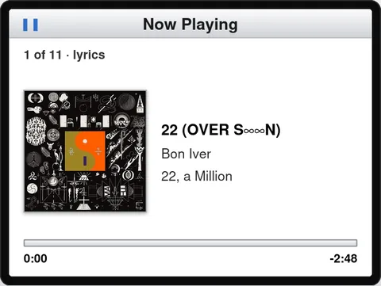
| Display item | Function |
|---|---|
| Song number | Where the song is in the list that's playing, such as 1 of 11. The word "lyrics" appears when the song has lyrics. |
| Album art | A small heart appears on the art when the song is one of your favorites. |
| Song information | The song title, artist, and album. |
| Progress bar | How far into the song you are, and the time left. |
| To | Do this |
|---|---|
| Change the volume | Use the Click Wheel. A volume bar appears.On an iPhone, the Click Wheel moves through the song instead; use the phone's volume buttons. |
| Move to any point in the song | Press the Center button to show the scrubber bar, use the Click Wheel to move the diamond, and then press the Center button again. Fretzpod also goes to that point on its own after a few seconds. |
| Show the lyrics | Swipe sideways across the album art. The art turns over to show the lyrics. Swipe again to turn it back. |
| Add the song to your favorites, a playlist, and more | Press and hold the Center button. See Using the options menu. |
For songs with timed lyrics, each line lights up as it's sung. Lyrics without timing are a page you scroll with your finger.
Using the options menu
Press and hold the Center button on a song, album, artist, or playlist to see what you can do with it. The options appear in a box over the list.
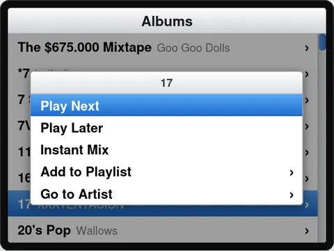
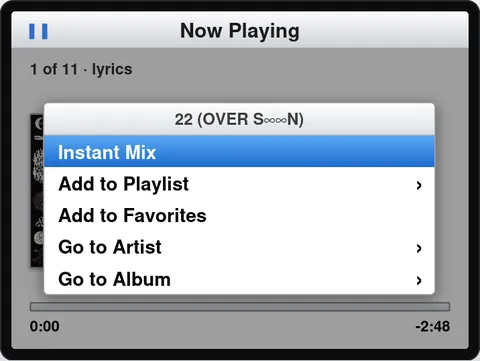
| Option | What it does |
|---|---|
| Play Next | Plays it right after the song that's playing now. |
| Play Later | Adds it to the end of what's playing. |
| Instant Mix | Plays a mix of songs like it, chosen by __SERVER__. |
| Add to Playlist | Choose one of your playlists to add it to. |
| Add to Favoritesor Remove from Favorites | Adds the song to your favorites, or takes it off. Favorites are shared with your __SERVER__ account, so they show in every app you use. |
| Go to Artist | Shows the artist's albums. |
| Go to Album | Shows the song's album. |
Albums, artists, and playlists show the options that work for a group of songs. On the Now Playing screen, Play Next and Play Later don't appear, since the song is already playing.
Note: You can add songs only to your own playlists and to playlists shared with you for editing.
To close the options without choosing one, press Menu.
Searching for music
Search finds artists, albums, and songs as you type, using the Click Wheel to pick letters.
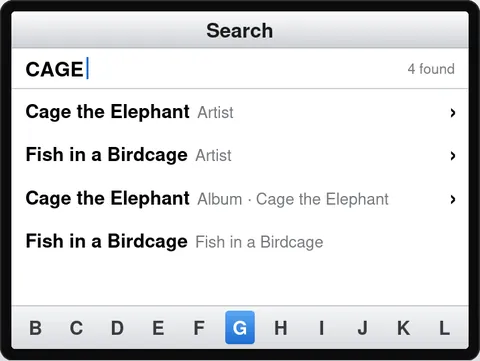
- Choose Music -> Search.
- Use the Click Wheel to move along the letters at the bottom of the screen, and press the Center button to add a letter. Results appear after two letters.
- To erase a letter, choose the arrow (⌫). To add a space, choose ␣.
- To go to the results, choose Done or press Next/Fast-forward. Then choose an artist, album, or song.
To go back to the letters from the results, press Menu.
Using Cover Flow
Cover Flow shows your albums as album covers you can flip through.
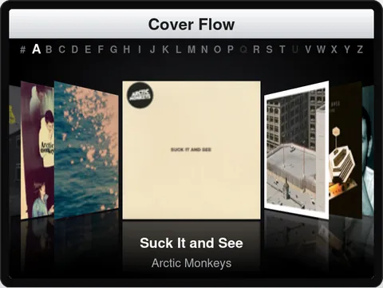
Use Cover Flow with the Click Wheel:
- Choose Music -> Cover Flow.
- Use the Click Wheel to move through the covers. Move your thumb quickly to jump one letter at a time. The letter bar at the top shows where you are.
- Press the Center button to turn the cover over and see its songs.
- Use the Click Wheel to select a song, and then press the Center button to play it. Press Menu to turn the cover back.
Use Cover Flow by turning your phone:
- Turn your phone sideways. Cover Flow fills the screen.
- Swipe to flip through covers, or tap a letter in the bar along the top to jump there.
- Tap the middle cover to turn it over, and tap a song to play it.
- Turn your phone upright to return to the menus.
Cover Flow shows full albums. Albums with only a few songs are left out, but their songs are still in Artists, Songs, and Genres.
Chapter 4
Extras and More
Choose Extras from the main menu for games, high scores, alarms, and the sleep timer.
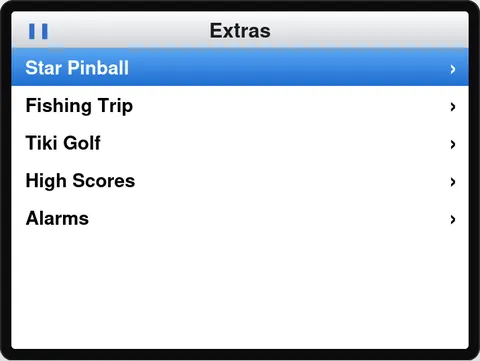
Playing games
Fretzpod includes three games made for the Click Wheel. Each game has its own menu with Start Game (or Go Fishing), the extras you can earn, and Exit Game.
In any game, press and hold Menu for about a second to pause. Then choose Resume, or Quit game to leave. A quick press of Menu during play only reminds you to hold it.
Star Pinball
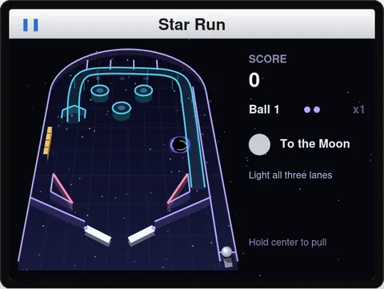
| To | Do this |
|---|---|
| Use the left and right flippers | Press Previous/Rewind and Next/Fast-forward. Each flipper stays up while you hold its button, and both work at once. |
| Launch the ball | Press and hold the Center button to pull the plunger back, and let go to launch. A longer pull is a harder shot. |
| Pause | Press Play/Pause, or press and hold Menu. |
Finish missions to fly to new planets for bonuses. Points add up across games and open new tables and balls.
Fishing Trip
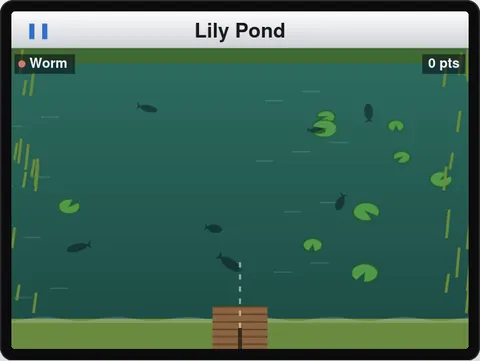
| To | Do this |
|---|---|
| Aim | Use the Click Wheel. |
| Cast | Press the Center button to start the power bar, and press it again to cast. The further the bar, the further the cast. |
| Reel in and move the lure | Turn the Click Wheel forward to reel in. Press Previous/Rewind or Next/Fast-forward to steer the lure, and the Center button to give it a twitch. |
| Hook a fish | When a gold "!" appears and the phone buzzes twice, press the Center button. |
| Land a fish | Keep the tension bar in the green. Turn forward to reel in and raise the tension, and turn back to give line. Too high snaps the line; too low and the fish gets away. |
| Pause | Press and hold Menu. |
A moving lure draws fish, but reeling too fast scares them off. Each kind of fish takes only certain lures. Your catches fill the Fish Log, and points open new spots and lures.
Tiki Golf
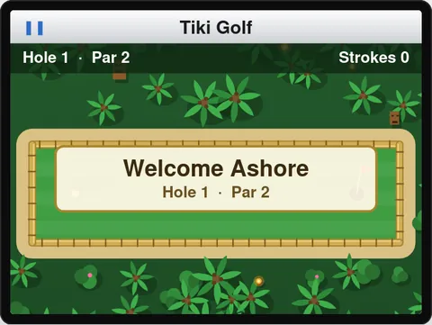
| To | Do this |
|---|---|
| Aim | Use the Click Wheel. Press Previous/Rewind or Next/Fast-forward for a small adjustment. |
| Putt | Press the Center button to lock your aim, and press it again to stop the power meter. |
| Pause | Press Play/Pause, or press and hold Menu. |
Good holes earn coins. Spend them in the Shop on new balls and trails.
High scores and prize bodies
Star Pinball and Fishing Trip share their high scores with everyone on __SERVER__. To see the boards, choose Extras -> High Scores.
- You appear on the boards as a player number until you choose a name. To choose or change it, choose Extras -> High Scores -> Your Name, and pick the letters with the Click Wheel.
- Each game's menu has a Gold Body item that shows how close you are to winning a gold Fretzpod body. Win all three for one more.
- Once a prize body is won, choose it in the game's menu or in Settings -> Body.
Using alarms and the sleep timer
Fretzpod can wake you with music, and stop the music after a while when you're falling asleep. Choose Extras -> Alarms.
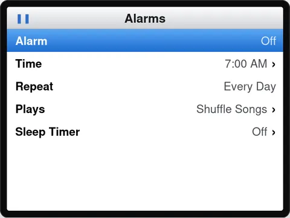
Set the alarm:
- Choose Extras -> Alarms.
- Choose Time, set the time, and press the Center button.
- Choose Repeat to pick Every Day or Once.
- Choose Plays, and then choose Shuffle Songs, Favorites, or a playlist.
- Select Alarm and press the Center button to turn it On.
When the alarm goes off, the music starts quietly and gets louder over about 30 seconds. Pause it as you would any song.
Important: The alarm goes off only while Fretzpod is open and your phone's screen is on, such as with Sleep Mode showing. A web app can't wake a phone that's asleep. For an alarm you can't miss, use your phone's Clock app.
Set the sleep timer:
- Choose Extras -> Alarms -> Sleep Timer, and then choose how long the music should play, or End of Song.
When the time is up, the music fades out and pauses. The Sleep Timer item shows the time left. To cancel the timer, choose Off.
Watching TV
If __SERVER__ offers TV, a TV item appears in the main menu with a list of free live channels and what's on now.
| To | Do this |
|---|---|
| Change the channel | Use the Click Wheel, or press Previous/Rewind or Next/Fast-forward to move one channel. |
| See what's on now and next | Press the Center button. |
| Pause | Press Play/Pause. |
| Watch full screen | Turn your phone sideways. Swipe to change the channel. |
| Change the volume | Use the volume buttons on your phone. |
Using Car Mode
Car Mode is made for a phone on the dashboard. The Click Wheel becomes four large buttons and the Center button, and the screen shows what's playing in large type. On an Android phone, use it in split screen next to your maps.
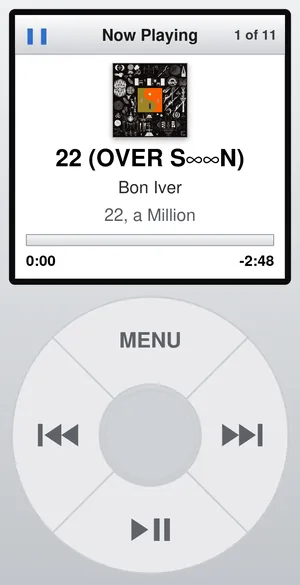
- To start Car Mode, choose Settings -> In the Car -> Enter Car Mode.
- To open the menu, press Menu. It has Shuffle Songs, Favorites, Playlists, Shuffle a Genre, and Leave Car Mode. Press Previous/Rewind or Next/Fast-forward to move, and the Center button to choose.
- On the Now Playing screen, press Previous/Rewind or Next/Fast-forward to change songs, and Play/Pause to pause. Press the Center button to add the song to your favorites, or to start Shuffle Songs when nothing is playing.
- To leave Car Mode, press Menu and choose Leave Car Mode.
Car Mode keeps your screen on (on the secure address). Your car's Bluetooth shows the song, and the steering wheel buttons work, with or without Car Mode.
Note: Android Auto and CarPlay show only apps made for them. Settings -> In the Car links to a free app that plays __SERVER__ music in both.
Chapter 5
Tips and Troubleshooting
What works where
Fretzpod works in any modern web browser. Some features depend on what your phone or browser allows.
| Feature | Android (Chrome) | Android (Firefox) | iPhone (Safari) | Computer |
|---|---|---|---|---|
| Music, menus, games | Yes | Yes | Yes | Yes |
| Click sound | Yes | Yes | Yes | Yes |
| Vibration | Yes | No | Being tested (iOS 18 or later) | No |
| Volume with the Click Wheel | Yes | Yes | No, use the phone's buttons | Yes |
| Install on the Home Screen | Yes | Yes | Yes | Chrome and Edge |
| Cover Flow by turning the phone | Yes | Yes | Yes | Music -> Cover Flow only |
| Keep the screen on (Sleep Mode, Car Mode, lyrics) | Yes, on https | Yes, on https | Yes, on https | Yes, on https |
Settings for your device
| If you use | Try this |
|---|---|
| An Android phone | Use Chrome, and add Fretzpod to your Home Screen. If you can't feel the Click Wheel, set Haptics to Strong. |
| An iPhone | Add Fretzpod to your Home Screen from Safari. Use the side buttons for volume; on the Now Playing screen, the Click Wheel moves through the song. |
| Cellular data | Set Streaming to Data saver. |
| A phone on a nightstand | Turn on Sleep Mode, set the Screen to Dark or Scheduled, and keep the phone on its charger. |
| A phone in the car | Use Car Mode in split screen next to your maps. |
| A computer | Use the keyboard. See Using Fretzpod on a computer. |
If something isn't working
The music stops between songs with the screen off
- Choose Settings -> About and look at Playback. If it says Basic, your browser can't use Fretzpod's normal player. On Android, use Chrome.
A list says "Couldn't load. Try again later."
- Check your Internet connection, and then press Menu and open the list again. If it keeps happening, __SERVER__ may be down for a moment.
The Click Wheel doesn't vibrate
- Check that Settings -> Haptics isn't Off, and try Strong.
- Phones don't vibrate in Do Not Disturb or with sound turned off. Check your phone's sound mode.
The screen turns off while you're reading lyrics or using Sleep Mode
- Use the Fretzpod address that starts with https://, or the app on your Home Screen added from it.
The alarm didn't go off
- The alarm needs Fretzpod open with the screen on. Leave Sleep Mode showing with the phone on its charger.
You were signed out
- Sign in again. This happens when your sign-in is removed from your __SERVER__ account.
You don't see a new feature
- Close Fretzpod completely and open it again. Settings -> About shows the version you have.
The About screen and the log
Choose Settings -> About to see details about Fretzpod on your device. When you ask for help, include a picture of this screen.
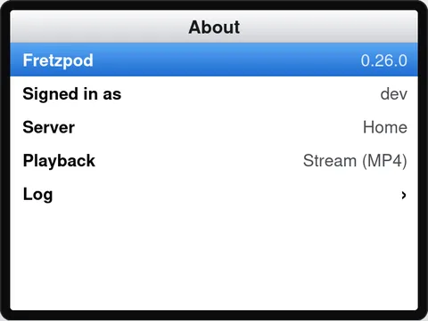
| Item | What it shows |
|---|---|
| Fretzpod | The version you're using. |
| Signed in as | Your __SERVER__ account. |
| Server | Home or Away, depending on which Fretzpod address you opened. |
| Playback | How your browser plays music: Stream or Stream (MP4) is normal; Basic means songs play one at a time. |
| Log | A list of recent events, such as songs starting and anything that went wrong. It stays on your phone and is cleared when you sign out. |
If something goes wrong, open the log right afterward and take a picture of it to include with your question.
Chapter 6
Requesting Music and Support
To ask for music that isn't on __SERVER__, or to get help with Fretzpod, contact the person who runs __SERVER__.
When you ask for help, include:
- What happened, and what you expected to happen.
- When it happened.
- The phone or computer and browser you were using.
- A picture of Settings -> About, and of the log if something went wrong.
Fretzpod is inspired by the iPod classic. It is not affiliated with or endorsed by Apple.